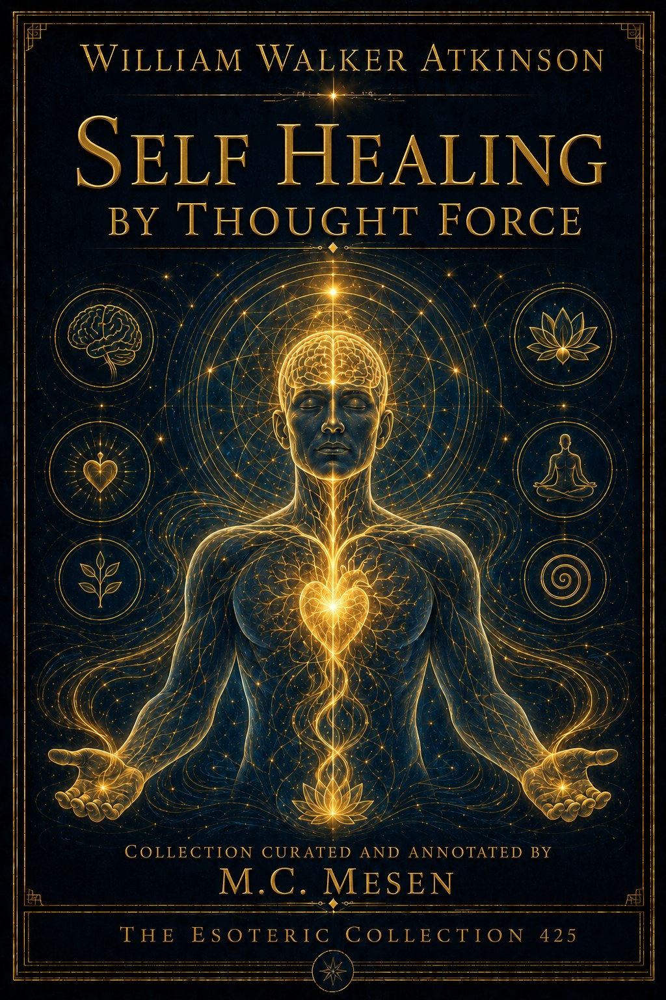
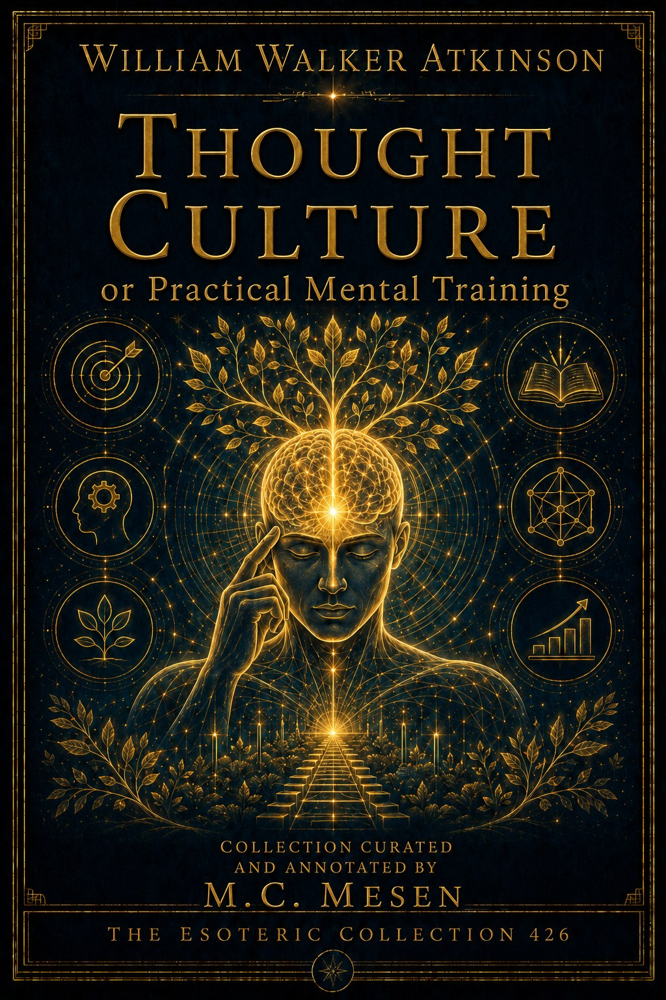
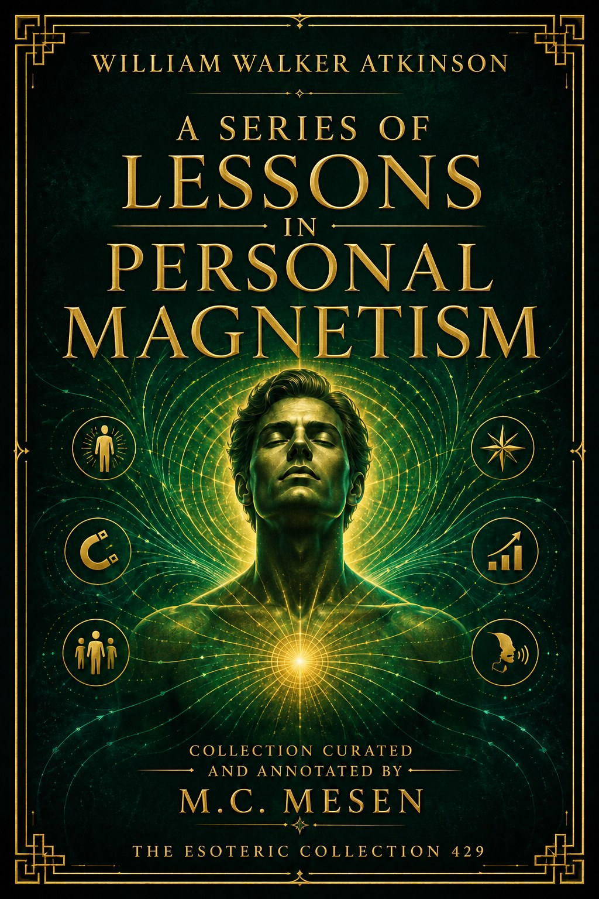
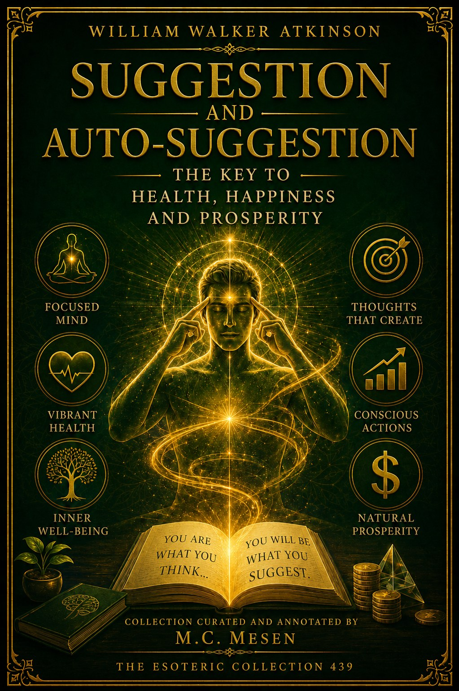
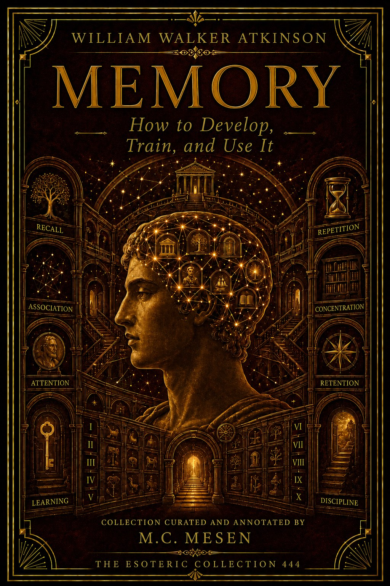
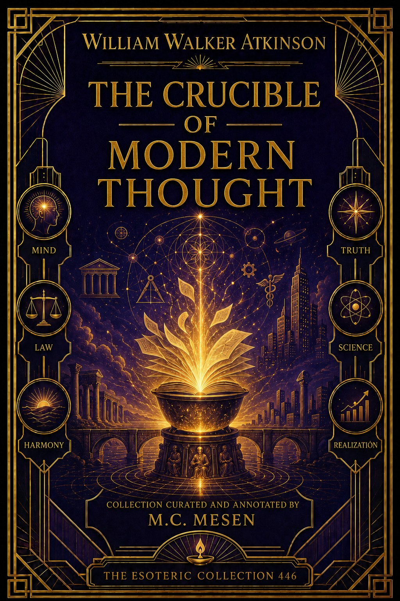
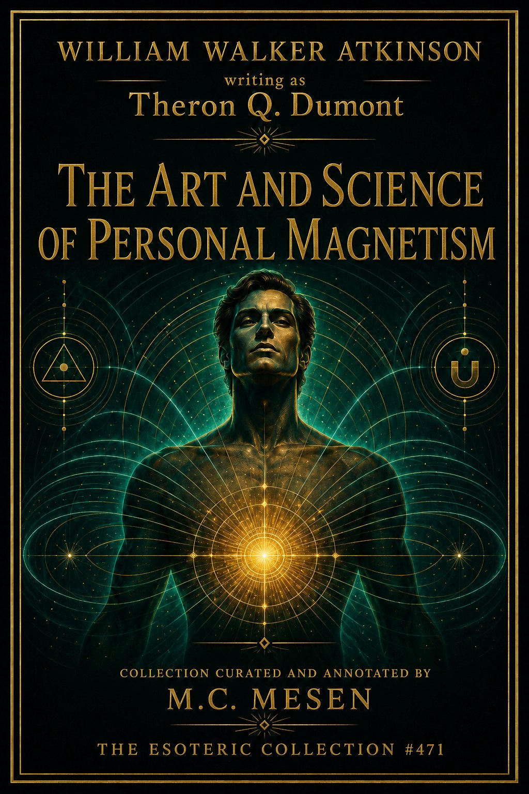
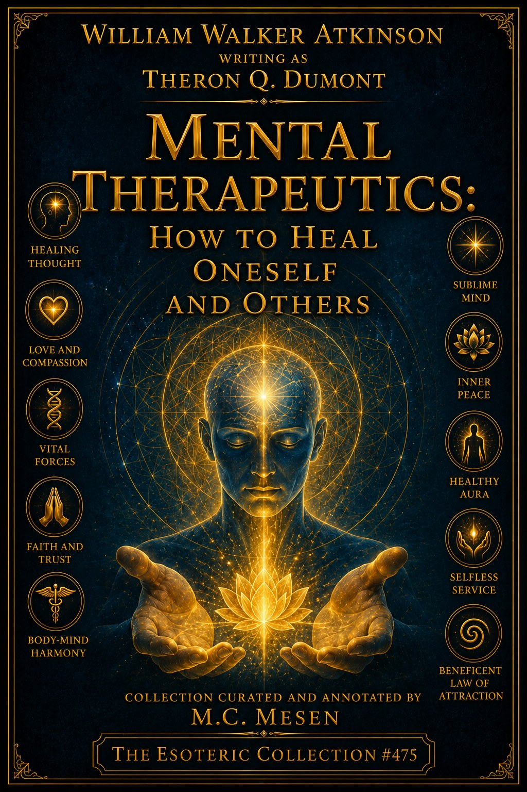
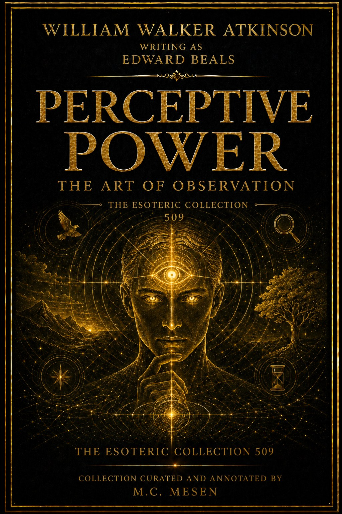

The New Psychology: Its Message, Principles and Practice
A clear introduction to the principles and practical methods of Atkinson's New Psychology.
The Esoteric Collection
A structured library of Atkinson's works under his own name and under the pseudonyms Yogi Ramacharaka, Theron Q. Dumont, Swami Panchadasi, Three Initiates, Magus Incognito, and Edward Beals.
A selection of works centered on mind, thought & consciousness, arranged so Atkinson and his pseudonyms can be read as a coherent library.
A clear introduction to the principles and practical methods of Atkinson's New Psychology.

A practical manual for understanding, directing, and training the powers of the mind.
An exploration of the subconscious and superconscious levels of the human mind.

A study of the constant relationship between mental states and physical conditions.

Practical methods for supporting the body's healing processes through thought and suggestion.

A systematic course in cultivating attention, thought, and practical mental discipline.
An exploration of intuition, automatic action, and the deeper levels of inner consciousness.

A practical guide to reading character through gesture, posture, voice, expression, and habit.

A complete course in personal magnetism, mental influence, and the disciplined use of thought.

A study of vibrant mental energy and its place in Atkinson's philosophy of mind.

An explanation of thought vibration and the law of attraction in the mental world.
A wide-ranging study of mental power, influence, and the hidden forces of the mind.

An examination of fascination, personal magnetism, and the influence one mind may exert upon another.

Practical methods for understanding mental influence and applying it with awareness and responsibility.

The principles of purposeful action, self-confidence, and mental attraction behind lasting success.

Mental and spiritual principles for achieving financial prosperity through discipline and constructive action.
The psychological principles behind successful selling, persuasion, and human connection.
Practical applications of thought force and personal magnetism in business and everyday life.

The use of suggestion and autosuggestion to reshape habits, attitudes, health, and personal conduct.
A philosophical inquiry into reality, being, and the deeper consciousness behind ordinary experience.

A practical introduction to clear reasoning, sound judgment, and the detection of faulty arguments.
Principles for turning thought and feeling into clear, persuasive, and effective expression.

A practical system for strengthening memory through observation, association, attention, and recall.

A complete guide to developing, training, and using memory more effectively.
The spiritual and psychological laws at the heart of the New Thought movement.

An inquiry into the philosophical and spiritual currents reshaping modern thought.

Concise reflections on New Thought, inner power, constructive thinking, and daily practice.

A compact history of New Thought and an introduction to its central principles.

A study of rebirth, spiritual development, and the law of cause and effect across successive lives.

A practical introduction to clairvoyant perception, psychomancy, and crystal gazing.
A balanced study of telepathy through historical accounts, experiments, and theoretical explanation.
An exploration of thought as a creative force shaping character, circumstance, and personal destiny.
An allegorical journey toward the hidden source of courage, purpose, and inner power.

Practical exercises in thought transference, mental receptivity, and the observation of subtle signals.
A selection of works centered on aura, clairvoyance & mediumship, arranged so Atkinson and his pseudonyms can be read as a coherent library.

A visual study of the human aura, its colors, vibrations, and associated thought forms.

A practical course in clairvoyance, subtle perception, and the development of latent psychic faculties.

A guided description of the astral plane, its landscapes, inhabitants, and phenomena.

An exploration of seership, premonition, and the disciplined development of prophetic perception.

A practical examination of mediumship, spiritual communication, and the invisible powers of the mind.
A selection of works centered on yogi philosophy, arranged so Atkinson and his pseudonyms can be read as a coherent library.

Fourteen foundational lessons on yogi philosophy, human nature, mental power, and spiritual development.
An advanced exploration of yogi philosophy, consciousness, spiritual law, and inner discipline.
Breathing practices for physical vitality, mental clarity, emotional balance, and spiritual development.
Yogi teachings on death, the afterlife, spiritual planes, and the continuing journey of the soul.

Psychic healing methods based on breath, mental direction, vital force, and natural law.
A practical yogi approach to bodily health, vitality, rest, nourishment, and daily well-being.
A course in mental development, concentration, self-mastery, and the expansion of consciousness.

The yoga of knowledge: an inquiry into reality, the Self, and spiritual understanding.
A concise guide to the restorative use of water within the yogi approach to health.

The life and teachings of Jesus interpreted through a mystical and esoteric perspective.

An accessible introduction to the principal philosophies and religious traditions of India.

Meditative teachings from the Upanishads on Being, consciousness, unity, and the inner Self.

The sacred dialogue of Krishna and Arjuna presented with practical spiritual commentary.
A selection of works centered on personal magnetism, arranged so Atkinson and his pseudonyms can be read as a coherent library.

A complete introduction to personal magnetism as a trainable art of presence and influence.
Advanced methods for strengthening personal magnetism, focused will, and purposeful influence.

A practical psychology of focused intelligence, self-mastery, and mental efficiency.

An exploration of the solar plexus as a center of nervous energy, vitality, and emotional response.

Methods for applying suggestion, thought, and mental discipline to health and healing.

A practical course for developing concentration, sustained attention, and effective willpower.

Straightforward exercises for improving observation, association, recall, and everyday memory.
A selection of works centered on kybalion, rosicrucians & arcana, arranged so Atkinson and his pseudonyms can be read as a coherent library.
The central Rosicrucian teachings on creation, spiritual evolution, symbolism, and inner alchemy.

An inquiry into the nature of reality, consciousness, and the evolution of the soul.
Practical formulas for applying arcane principles to thought, consciousness, and spiritual development.
An exploration of Vril as the vital, magnetic force believed to animate nature and human life.
A study of sex and polarity as complementary creative forces operating throughout nature.
The seven Hermetic principles presented as keys to consciousness, balance, and the order of the universe.
A selection of works centered on personal & creative power, arranged so Atkinson and his pseudonyms can be read as a coherent library.
A guide to self-mastery and the awakening of the deeper power of the Master Self.

The constructive use of imagination as a force for creation, achievement, and personal growth.
An exploration of desire as the energizing force behind purpose, effort, and achievement.

Faith understood as confident expectation and an active source of courage and inspiration.

A practical study of will as the directing force behind discipline and lasting personal change.

A guide to understanding and directing the hidden habits and forces of the subconscious mind.

An exploration of spiritual power as an inexhaustible source of wisdom, strength, and vitality.

A study of thought as a radiating force capable of influencing character and circumstance.

Practical training in observation, attention, interpretation, and the development of keen perception.

An accessible course in practical logic, sound reasoning, analysis, and better decision-making.
The deliberate construction of character as the foundation of reliable and lasting personal power.
An exploration of regenerative energy and the renewal of body, mind, and personal vitality.